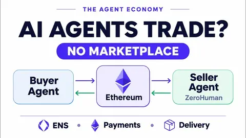
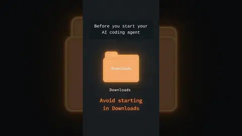

Video · plays here
Video · plays hereAround this moment
Video
My AI Blog Published 1,400 Articles. Then Google Visibility Fell 97%
I built an autonomous AI blog that researches, writes, reviews and publishes articles without human intervention.
AI application builderCPAPMPNew Jersey, USA

I build things, test new technology, and show what actually happened.
Right now, that’s mostly AI and crypto. Experiments, software, wins, failures, and weird detours.
Newest buildsAll 19 →
Video · plays hereVideo
I built an autonomous AI blog that researches, writes, reviews and publishes articles without human intervention.
Tuned to
3 builds · 7 videos · 2 essays
Automated Meanwhile the Digest pipeline published 224 posts in Nov 2026. Automated publishing is paused. The archive stays public.
 Returning Your ThingsSHIPPED 1:54 runtime
Returning Your ThingsSHIPPED 1:54 runtime
AI agent economy on EthereumSHIPPED VideoMy AI Blog Published 1,400 Articles. Then Google Visibility Fell 97%Nov 25, 2026
VideoMy AI Blog Published 1,400 Articles. Then Google Visibility Fell 97%Nov 25, 2026 Video4 AI Filmmaking Tips That Make Videos Feel Like FilmsNov 20, 2026
Video4 AI Filmmaking Tips That Make Videos Feel Like FilmsNov 20, 2026 ShortBuying a .com Domain Is a Vanity Purchase #domains #domainnamesNov 12, 2026
ShortBuying a .com Domain Is a Vanity Purchase #domains #domainnamesNov 12, 2026In hand AI Agents4 Agents3 HyperAgent3 Automation2 ENS2 Ethereum2
Screening room
Every upload, newest first. Videos play right here; nothing loads from YouTube until you press play.
The reel · scroll sidewaysOpen the video index →
My AI Blog Published 1,400 Articles. Then Google Visibility Fell 97%Video · Nov 25, 2026 · in Autonomous AI blog4 AI Filmmaking Tips That Make Videos Feel Like FilmsVideo · Nov 20, 2026 · in 4 Tips for Making AI Videos That Feel Like FilmsBuying a .com Domain Is a Vanity Purchase #domains #domainnamesShort · Nov 12, 2026 How to Solve the Bambu Lab Burr Puzzle (Step-by-Step Assembly Guide)Video · Nov 6, 2026 · in How to Solve the Bambu Lab Burr Puzzle (Step-by-Step Assembly Guide)
How to Solve the Bambu Lab Burr Puzzle (Step-by-Step Assembly Guide)Video · Nov 6, 2026 · in How to Solve the Bambu Lab Burr Puzzle (Step-by-Step Assembly Guide) How to File a Trademark Using AI Without a LawyerVideo · Nov 2, 2026
How to File a Trademark Using AI Without a LawyerVideo · Nov 2, 2026
Before You Run an AI Coding Agent, Do These 4 ThingsShort · Oct 27, 2026 ENSv2 Vote Passed: New .eth Renewal Discounts ExplainedVideo · Oct 27, 2026 · in AI explainer producer
ENSv2 Vote Passed: New .eth Renewal Discounts ExplainedVideo · Oct 27, 2026 · in AI explainer producer ENSv2 Explained: New Prices, Migration & What .eth Owners Need to KnowVideo · Oct 21, 2026 · in AI explainer producer
ENSv2 Explained: New Prices, Migration & What .eth Owners Need to KnowVideo · Oct 21, 2026 · in AI explainer producer I Opened 2 Koda Plushie Mystery Boxes at ApeFestShort · Oct 17, 2026
I Opened 2 Koda Plushie Mystery Boxes at ApeFestShort · Oct 17, 2026 I Gave an AI Agent an SEO Job. Now It Works Without Me.Video · Oct 15, 2026 · in Autonomous SEO agent
I Gave an AI Agent an SEO Job. Now It Works Without Me.Video · Oct 15, 2026 · in Autonomous SEO agent I Found My Last Name on an Old Guinness LabelShort · Oct 14, 2026 · in The Ashe Family Coat of Arms: A Cockatrice and a Guinness Connection
I Found My Last Name on an Old Guinness LabelShort · Oct 14, 2026 · in The Ashe Family Coat of Arms: A Cockatrice and a Guinness Connection How I Got a Google Knowledge Panel (Without Wikipedia)Short · Oct 13, 2026
How I Got a Google Knowledge Panel (Without Wikipedia)Short · Oct 13, 2026 Why I Don't Run AI Agents on My Personal ComputerShort · Oct 8, 2026
Why I Don't Run AI Agents on My Personal ComputerShort · Oct 8, 2026 How to Start Learning AI (Without Getting Overwhelmed)Short · Sep 25, 2026 · in I Used AI to Make My First Video. The AI Editor Was the Part I Trusted Least.
How to Start Learning AI (Without Getting Overwhelmed)Short · Sep 25, 2026 · in I Used AI to Make My First Video. The AI Editor Was the Part I Trusted Least.Receipts & machines
The tape is printed from the build entries. Beside it, two automated systems: one sells small jobs to AI agents, one wrote the Digest. Both are kept apart from the work above.
KENASHE.AI
RECEIPTS
Printed from builds.ts · Nov 25, 2026 · eb9a67b
Metrics appear only where the build entry has one.
No view counts. No invented numbers.
An always-on service that sells small jobs to other AI agents. Agents pay the ENS name zerohuman.eth 0.0001 ETH and get the result back in a transaction from the same name.
*As of November 20, 2026 both paid mainnet orders came from Ken’s own allowlisted test buyer. No outside agent had bought from it yet. Readings are fetched once per visit and marked Live only when that request succeeds.
KenAshe Digest (automated). Not written by Ken; kept apart from his work.
Automated publishing is paused. The archive stays public.
Last posts out of the pipeline
Ken on what happened: My AI Blog Published 1,400 Articles. Then Google Visibility Fell 97% (Nov 25, 2026)
Open the archive
The person at the desk
Ken Ashe is a builder, entrepreneur, CPA and PMP who documents what he builds, tests, and learns at KenAshe.ai. Much of his current work explores AI, automation, crypto, and emerging technology. He combines existing models, APIs, coding tools, and automation platforms to build agents, websites, and workflows.
I work at the AI application layer, turning existing models, APIs, coding tools, and automation platforms into working systems. Build first, test what actually happens, document the failures alongside the wins, and keep evidence separate from claims.
Ships agents, automations, and AI-assisted sites at the application layer, then documents what shipped and what broke.
Proof, controls, and delivery. Strict financial discipline and decades of scoping, sequencing, and shipping real projects.
Founder of Lucky Domains, a digital presence studio for the AI era. luckydomains.io ↗